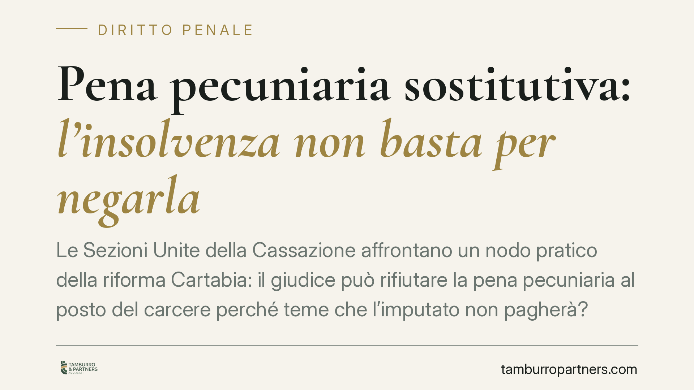

Pena pecuniaria sostitutiva: l'insolvenza non basta per negarla
Le Sezioni Unite della Cassazione affrontano un nodo pratico della riforma Cartabia: il giudice può rifiutare la pena pecuniaria al posto del carcere perché teme che l'imputato non pagherà? La risposta è no. Le condizioni economiche servono a calibrare l'importo giornaliero, non a precludere la sostituzione della pena detentiva breve. Una decisione che tutela chi dispone di redditi modesti.

Il caso
Un imputato condannato a una pena detentiva breve chiede la sostituzione con la pena pecuniaria, una delle novità introdotte dalla riforma Cartabia. Il giudice di merito rigetta: l'imputato, secondo la prognosi, è insolvente e non pagherà mai la somma. Meglio, dunque, mantenere la pena detentiva.
La questione arriva alle Sezioni Unite della Cassazione, chiamate a stabilire se la probabile incapacità di pagare possa, da sola, giustificare il diniego della sostituzione.
Inquadramento normativo
La riforma Cartabia (D.lgs. 150/2022) ha rilanciato le pene sostitutive delle pene detentive brevi, tra cui la pena pecuniaria. L'obiettivo è ridurre il ricorso al carcere per le condanne di minore entità, quando la sanzione detentiva non appare necessaria.
Il punto delicato riguarda il ruolo delle condizioni economiche dell'imputato. Il sistema prevede un meccanismo a "tassi giornalieri": si individua un numero di giorni corrispondente alla pena, poi si moltiplica per un importo giornaliero che il giudice fissa tenendo conto delle condizioni economiche e patrimoniali del condannato (in linea con i criteri di commisurazione dell'art. 133 cod. pen.).
Le Sezioni Unite chiariscono la funzione di questo criterio. Le condizioni economiche non sono un filtro all'ingresso, ma uno strumento di modulazione. In altre parole: servono a decidere *quanto* si paga al giorno, non *se* la pena pecuniaria sia ammissibile.
Il principio delle Sezioni Unite
Il giudice non può negare la pena pecuniaria sostitutiva fondandosi sulla prognosi di insolvenza dell'imputato. Ragionare diversamente produrrebbe un effetto discriminatorio: chi ha redditi bassi resterebbe escluso dal beneficio proprio perché povero, mentre chi dispone di patrimonio potrebbe accedervi senza ostacoli.
Un simile automatismo finirebbe per trasformare la capacità economica in un requisito di ammissibilità, snaturando la logica della riforma. La legge, al contrario, affida al tasso giornaliero il compito di adattare la sanzione alle reali possibilità del condannato.
Resta fermo, peraltro, che l'eventuale mancato pagamento non resta privo di conseguenze: l'ordinamento prevede meccanismi di conversione in caso di insolvenza, ma operano in una fase successiva. La valutazione sulla sostituzione va tenuta distinta da quella sull'esecuzione.
Implicazioni pratiche
Per l'imputato con redditi modesti, la decisione apre una possibilità concreta: la condizione di scarsa liquidità non può più essere opposta come ragione automatica di rigetto. Chi affronta una condanna a pena detentiva breve può richiedere la sostituzione senza vedersi respingere la domanda solo in ragione della propria situazione economica.
Per la difesa, cambia l'impostazione dell'istanza. L'attenzione si sposta sulla documentazione delle condizioni economiche, non per dimostrare la capacità di pagare, ma per ottenere un tasso giornaliero proporzionato. Un quadro reddituale accurato diventa lo strumento per modulare l'importo verso il basso.
Per il giudice, infine, si riduce il margine di discrezionalità nella fase di ammissione: la motivazione di diniego dovrà fondarsi su elementi diversi dalla mera prognosi di insolvenza, pena la censurabilità della decisione.
Cosa fare in concreto
- Verificate i presupposti della sostituzione già in fase di merito: la pena pecuniaria va richiesta tempestivamente, non solo in sede esecutiva.
- Documentate con precisione le condizioni economiche dell'imputato (redditi, carichi familiari, patrimonio) per ottenere un tasso giornaliero adeguato.
- Impostate l'istanza sulla modulazione dell'importo, non sulla capacità di pagamento complessiva.
- Contestate i dinieghi fondati sulla sola insolvenza: alla luce del principio delle Sezioni Unite, una motivazione di questo tipo è viziata.
- Distinguete la fase di ammissione da quella esecutiva: le conseguenze del mancato pagamento si affrontano dopo, con strumenti propri.
Conclusioni
La pronuncia riconduce la pena pecuniaria sostitutiva alla sua funzione: una sanzione accessibile anche a chi dispone di risorse limitate, calibrata sulle reali possibilità del condannato. L'insolvenza non è un muro all'ingresso, ma un parametro di adeguamento. Consigliamo di rivalutare, caso per caso, le strategie difensive nelle condanne a pene detentive brevi.
---
*Contributo informativo a cura di Tamburro & Partners - Avv. Giuseppe Tamburro. Non costituisce parere legale.*
Ogni condominio ha una storia a sé.
Se gestisci un'amministrazione e vuoi un confronto su una specifica questione condominiale, scrivi allo studio. Ti rispondiamo entro un giorno lavorativo.